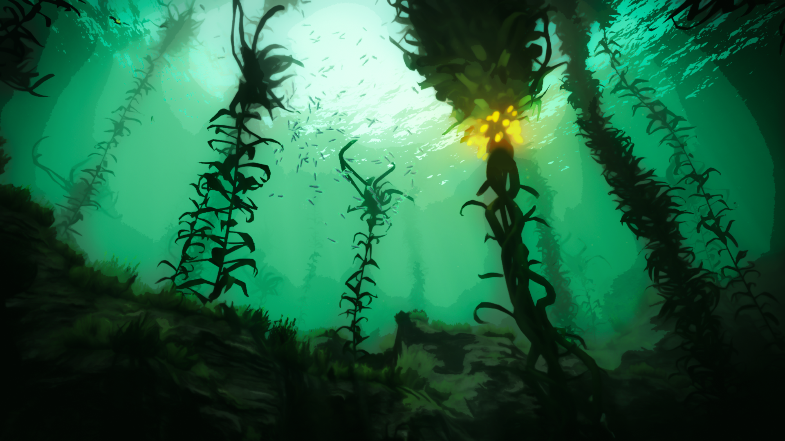
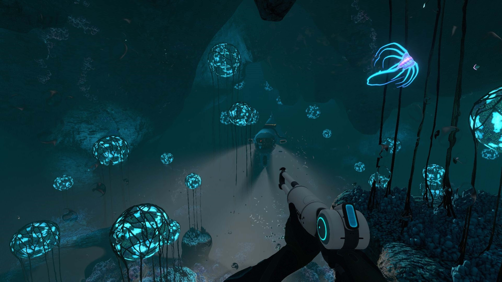

Tu nave, el Aurora, ha impactado en un mundo oceánico desconocido. La cápsula salvavidas donde te encuentras es tu único refugio en la superficie para sobrevivir y escapar. Ve a la wiki de Subnautica para sacarte dudas tecnicas.
Zona de Inmersión Inicial (0m - 300m)
Entorno oceánico iluminado por la estrella local. Ofrece la mayor densidad de recursos básicos y biodiversidad no agresiva de 4546B.
Arrecifes Seguros (Safe Shallows | 0 - 80m):
Centro del mapa y punto de impacto de tu cápsula salvavidas.
• Recursos: Piedra caliza (Titanio, Cobre), Cuarzo y Champiñones Ácidos.
• Peligro: Pez Explosivo (Crashfish) en túneles de coral y vainas tóxicas de Pez Gas.
Bosque de Algas (Kelp Forest | 50 - 150m):
Bosques sumergidos dominados por algas gigantes bioluminiscentes.
• Recursos: Semillas de alga, Racimos brillantes y Depósitos de Arenisca.
• Peligro: Acechadores (Stalkers), atraídos por el metal.

Mesetas de Hierba (Grassy Plateaus | 50 - 170m):
Grandes llanuras de arena cubiertas de vegetación roja.
• Recursos: Planos para el Seamoth, Estación de Modificación y Cortadora.
• Peligro: Tiburones de Arena (Sandsharks) en el lecho marino.
Abismos y Sistemas de Cuevas (300m - 1500m+)
Ecosistemas sin luz solar directa. Requieren vehículos presurizados, módulos térmicos y luces de alta intensidad para sobrevivir.
Gran Arrecife y Cuevas (Grand Reef | 300 - 500m):
Estructuras orgánicas flotantes, profundas grietas bioluminiscentes y ruinas humanas.
• Datos clave: Hábitat del Cangrejoserpiente (Crabsnake) y ubicación de la base abandonada Degasi. Primeras vetas de Magnetita y Litio expuesto.

Río Perdido (Lost River | 600 - 900m):
Extenso complejo cavernoso recorrido por ríos subterráneos de salmuera ácida verde.
• Datos clave: Contiene laboratorios de los Precursores y fósiles de leviatanes extintos. Abundancia de Níquel, Uraninita y presencia del Ghost Leviathan juvenil.
Zona Volcánica Inactiva y Activa (900 - 1400m+):
El punto más profundo del mapa, rodeado de ríos de magma con temperaturas superiores a 700°C.
• Datos clave: Requiere el Prawn Suit con módulo de profundidad máximo. Fuente primordial de Kyanita y ubicación de la Instalación de Contención Primaria.
Vehículos de Subnautica
Seaglide (Propulsor de Mano):
Dispositivo compacto de propulsión personal equipado con luces y pantalla holográfica 3D.
Único por: Su radar topográfico integrado y alta movilidad inicial sin bahía de construcción.
Seamoth (Sumergible Personal):
Mini-sumergible monoplaza para exploración rápida en aguas de media profundidad.
Único por: Sus módulos de mejora intercambiables (como defensa eléctrica o sonar) y capacidad de acoplamiento.
Prawn Suit (Exotraje Mecánico):
Traje bipedal blindado para soportar presiones extremas en los abismos.
Único por: Su física de caminata sobre el lecho marino con propulsores de salto y brazos modulares (taladro y gancho).
Cyclops (Submarino Industrial):
Submarino de gran tamaño que funciona como una base móvil autosuficiente.
Único por: Permitir construcciones en su interior, gestión de velocidad por marchas y sistema de evasión ante Leviatanes.
Minerales y Recursos
Materiales clave recolectados en el planeta 4546B:
Superficie (0 - 100m): Titanio, Cobre y Cuarzo (para estructuras, baterías y vidrio).
Media (100 - 400m): Oro, Plata, Litio y Diamantes (para circuitos, refuerzos y mejoras).
Profundidades (400m+): Niquel, Kyanita y Uraninita (para tecnología avanzada y celdas avanzadas).
Fauna Hostil: Leviatanes
Organismos de más de 20 metros clasificados como amenaza extrema en 4546B:
Reaper Leviathan (Segador):
Habita en zonas de transición y restos del Aurora. Utiliza ecolocalización; si escuchas su rugido, ya te localizó.
Ghost Leviathan (Fantasma):
Criatura translúcida y bioluminiscente que custodia las fosas abisales y zonas vacías del mapa.
Sea Dragon Leviathan (Dragón Marino):
El coloso de las profundidades volcánicas, capaz de lanzar proyectiles de magma fundido.


 Único por: Su radar topográfico integrado y alta movilidad inicial sin bahía de construcción.
Único por: Su radar topográfico integrado y alta movilidad inicial sin bahía de construcción.
 Único por: Sus módulos de mejora intercambiables (como defensa eléctrica o sonar) y capacidad de acoplamiento.
Único por: Sus módulos de mejora intercambiables (como defensa eléctrica o sonar) y capacidad de acoplamiento.
 Único por: Su física de caminata sobre el lecho marino con propulsores de salto y brazos modulares (taladro y gancho).
Único por: Su física de caminata sobre el lecho marino con propulsores de salto y brazos modulares (taladro y gancho).
 Único por: Permitir construcciones en su interior, gestión de velocidad por marchas y sistema de evasión ante Leviatanes.
Único por: Permitir construcciones en su interior, gestión de velocidad por marchas y sistema de evasión ante Leviatanes.
 Habita en zonas de transición y restos del Aurora. Utiliza ecolocalización; si escuchas su rugido, ya te localizó.
Habita en zonas de transición y restos del Aurora. Utiliza ecolocalización; si escuchas su rugido, ya te localizó.
 Criatura translúcida y bioluminiscente que custodia las fosas abisales y zonas vacías del mapa.
Criatura translúcida y bioluminiscente que custodia las fosas abisales y zonas vacías del mapa.
 El coloso de las profundidades volcánicas, capaz de lanzar proyectiles de magma fundido.
El coloso de las profundidades volcánicas, capaz de lanzar proyectiles de magma fundido.